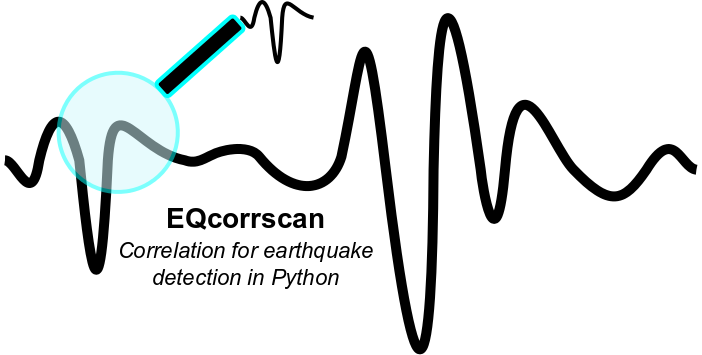

Welcome to EQcorrscan’s documentation¶
EQcorrscan¶
A python package to conduct match-filter earthquake detections. Codes are stored on github, the master and development branches are on github, or the latest stable(ish) release can be found here
This package contains routines to enable the user to conduct match-filter earthquake detections using Obspy bindings when reading and writing seismic data, and the correlation routine in openCV. Neither of these packages are installed by this software, due to a range of licenses being implemented. However, both are open-source and should be installed before using this package. This package was written to implement the matlab routines used by Chamberlain et al. (2014) for the detection of low-frequency earthquakes.
Also within this package are:
- Clustering routines for seismic data;
- Peak finding algorithm (basic);
- Automatic amplitude picker for local magnitude scale;
- Seisan S-file integration for database management and routine earthquake location;
- Stacking routines including phase-weighted stacking based on Thurber at al. (2014);
- Brightness based template creation based on the work of Frank et al. (2014)
This package is written by Calum Chamberlain of Victoria University of Wellington, and is distributed under the LGPL GNU Licence, Copyright Calum Chamberlain & Chet Hopp 2015 & 2016.
References¶
- CJ Chamberlain, DR Shelly, J Townend, TA Stern (2014) Low‐frequency earthquakes reveal punctuated slow slip on the deep extent of the Alpine Fault, New Zealand, G-cubed, doi:10.1002/2014GC005436
- Thurber, C. H., Zeng, X., Thomas, A. M., & Audet, P. (2014). Phase‐Weighted Stacking Applied to Low‐Frequency Earthquakes, BSSA, doi:10.1785/0120140077.
- Frank, W. B., & Shapiro, N. M. (2014). Automatic detection of low-frequency earthquakes (LFEs) based on a beamformed network response, Geophysical Journal International, 197(2), 1215-1223, doi:10.1093/gji/ggu058.